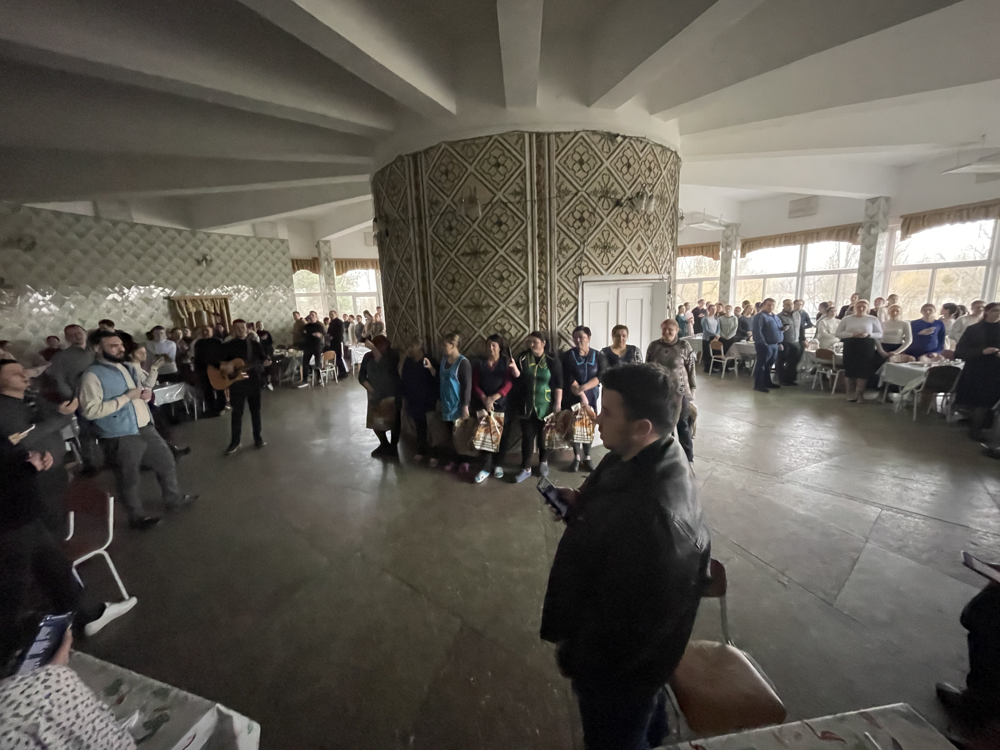
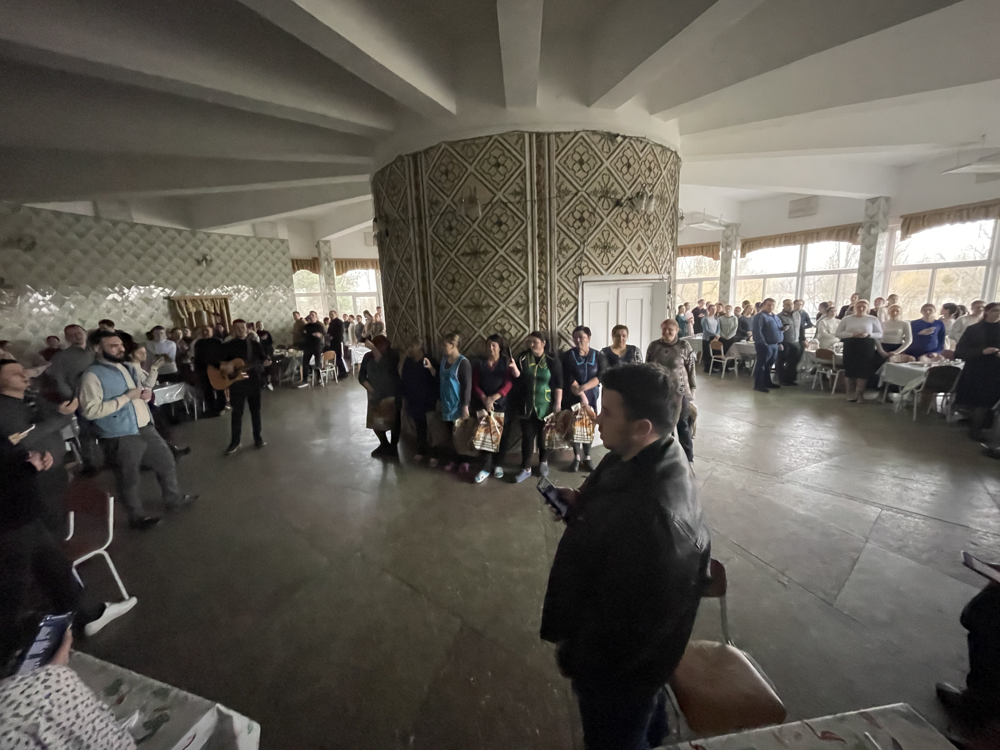

📅 Деталі події
- Дати: 23–27 липня
- Місце: поблизу селища Козин, Київська область
- Вартість: 2800 грн (проживання + харчування на 4 доби)
- Кількість місць: 250 учасників
🎤 Доповідачі
Стародуб Андрій
Мадудяк Славік
Маліновський Андрій
Машніцький Микола
Бутмертчук Андрій
✍️ Реєстрація
Щоб зареєструватися, перейдіть за посиланням нижче. Реєстрація дійсна лише після внесення передоплати 1000 грн.
Заповнити форму*Будь ласка, прикріпіть підтвердження оплати у формі.
🌿 Про що цей табір?
Табір покликаний допомогти молоді сформувати біблійний світогляд і зрозуміти, які ідеї формують їхнє життя. Ми поговоримо про культуру, ідеології, Царство Боже та особистий вплив через істину, любов і жертовність. Це буде час близького спілкування, роздумів, молитви і дружби.
📸 Атмосфера табору
 
